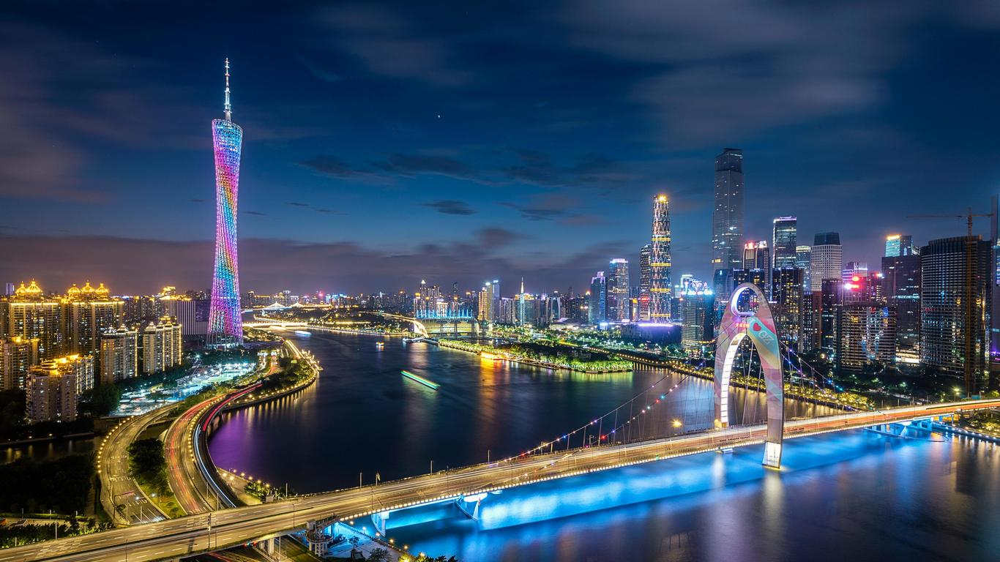

Shanghai

Shanghai, also spelled Shang-hai, city and province-level shi (municipality), east-central China.
It is one of the world’s largest seaports and a major industrial and commercial centre of China.
Guangzhou

Guangzhou, Wade-Giles romanization Kuang-chou, conventional Canton or Kwangchow, city, capital of Guangdong sheng (province), southern China.
Its city centre lies near the head of the Pearl River (Zhu Jiang) Delta,
more than 90 miles (145 km) inland from the South China Sea.
Because of its position at the meeting point of inland rivers and the sea, it has long been one of China’s main commercial and trading centres.
It has served as a doorway for foreign influence since the 3rd century CE and was the first Chinese port to be regularly visited by European traders,
who called it Canton. The city is a historic centre of learning.